Cybersecurity Threats Analysis 2015–2024
Comprehensive analysis of global cyberattack trends, patterns, and defense mechanisms
Goal
Identify key trends, risks, and patterns in global cyberattacks from 2015 to 2024.
Main Research Questions
- Which attack types are increasing over time?
- Which industries lose the most money?
- What sources are behind the attacks?
- Which defense methods reduce resolution time?
- Which countries are most frequently linked to cyberattacks?
Attack Type Overview
- Phishing: Deceptive emails trick users into revealing credentials.
- Ransomware: Encrypts systems and demands payment for restoration.
- DDoS: Overloads systems with traffic, causing service outages.
- Man-in-the-Middle: Intercepts communication between users and systems.
- Credential Stuffing: Reuses leaked passwords to access accounts.
- Insider Threat: Employees or contractors misuse access.
Dataset Structure: Each row represents a single attack event.
- Country: the country where the incident occurred
- Year: the year when the attack took place
- Attack Type: the method used by the attackers
- Target Industry: the sector targeted (healthcare, banking, government, etc.)
- Financial Loss (in Million $): the estimated financial damage
- Number of Affected Users: the number of individuals impacted
- Attack Source: the origin (nation-state, hacker group, insider, unknown)
- Security Vulnerability Type: the exploited weakness
- Defense Mechanism Used: the protection in place during the attack
- Incident Resolution Time (in Hours): response and resolution duration
Data Source: Kaggle - Global Cybersecurity Threats 2015-2024
Part 1: Attack Type Trends
1.1 Attack Volume Analysis
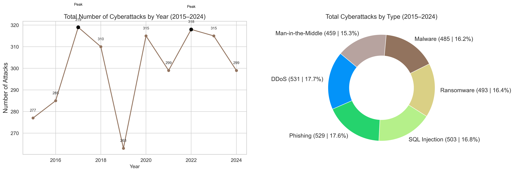Insight: Cyberattacks peaked in 2017 (320) and again in 2022 (318), indicating a likely 5-year escalation cycle. In 2024, incidents dropped slightly to 299, but the overall threat level remains consistently high.
Action: Prepare for cyclical surges (next likely in 2027). Deploy scalable, elastic security infrastructure that can ramp up in pre-peak years.
1.2 Attack Type Distribution
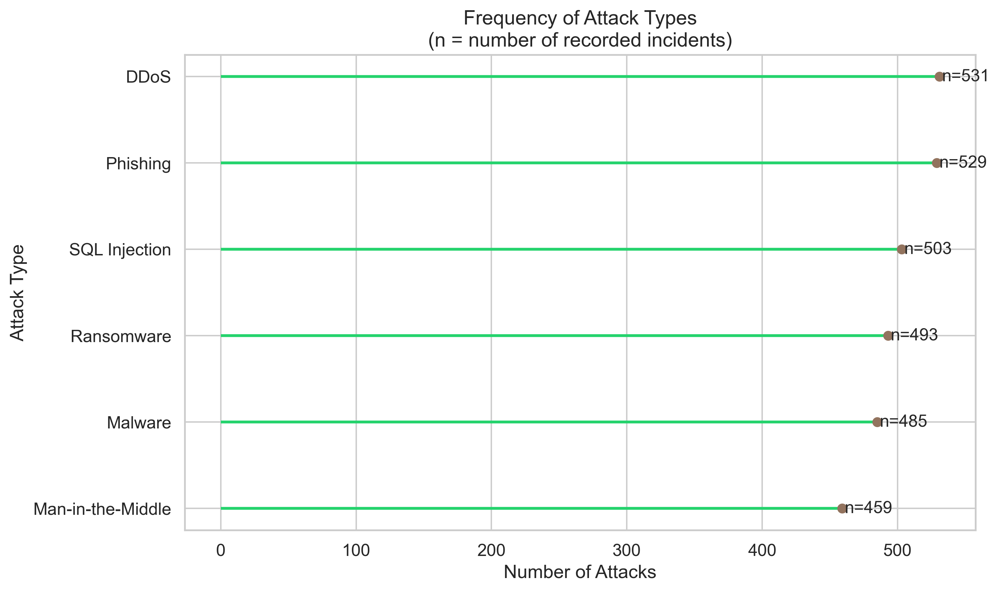Insight: DDoS (17.7%) and Phishing (17.6%) dominate the threat landscape, jointly responsible for over 35% of attacks. SQL Injection follows closely at 16.8%, indicating a broadly distributed threat profile across technical attack vectors.
Action: Ensure multi-layered protection across all major attack types. Prioritize DDoS mitigation infrastructure and phishing filters equally.
1.3 Top Attack Types Trend
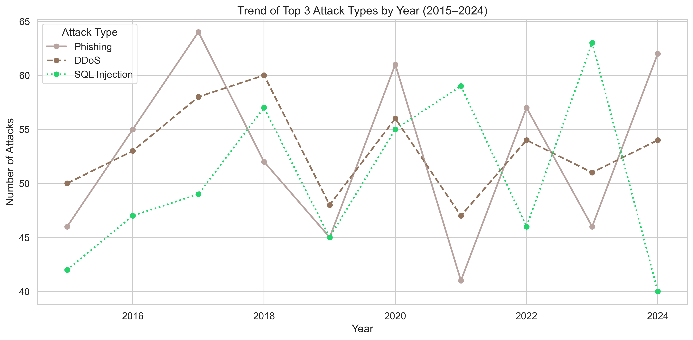Insight: DDoS leads attack frequency (17.7%), followed closely by Phishing (17.6%) and SQL Injection (16.8%). The trend shows consistent high-volume attacks across all three vectors, with peaks in 2017 (319 attacks) and 2022 (318 attacks).
Action: Focus on the top three attack vectors equally. Deploy robust DDoS protection, comprehensive phishing defenses, and SQL injection prevention through input validation and parameterized queries.
1.4 Attack Type Distribution by Industry
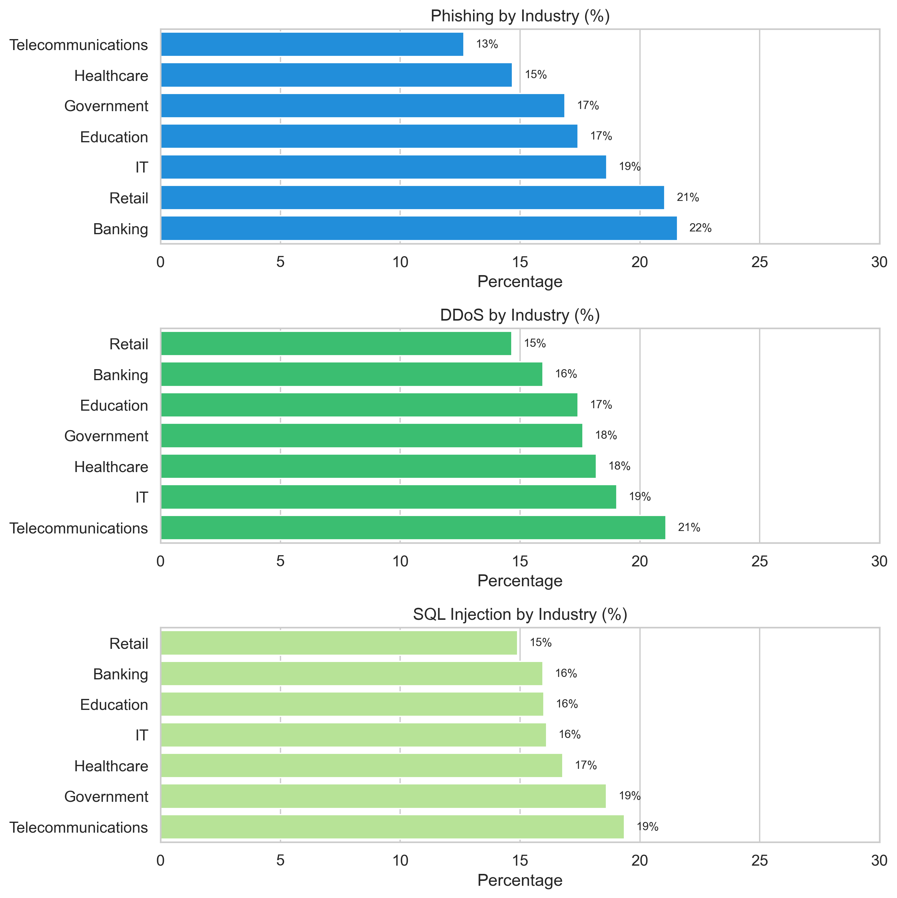Insight: Different industries show varying attack type preferences. Some sectors face concentrated attacks from specific vectors, while others experience more balanced threat distributions across multiple attack types.
Action: Customize industry-specific defense strategies based on attack type patterns. Focus resources on the attack vectors most relevant to each sector.
1.5 Growth Rate of Attack Types (2015–2024)
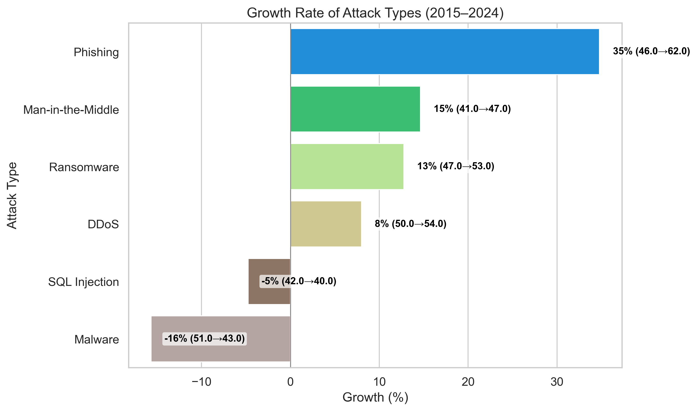Insight: Attack type growth rates vary significantly, with some showing dramatic increases while others decline or remain stable. Emerging attack vectors show the highest growth rates, while traditional methods may be plateauing.
Action: Shift security investments toward rapidly growing attack types. Maintain baseline defenses for stable threats while increasing focus on emerging vectors.
Part 2: Financial Impact Analysis
2.1 Global Loss Trends
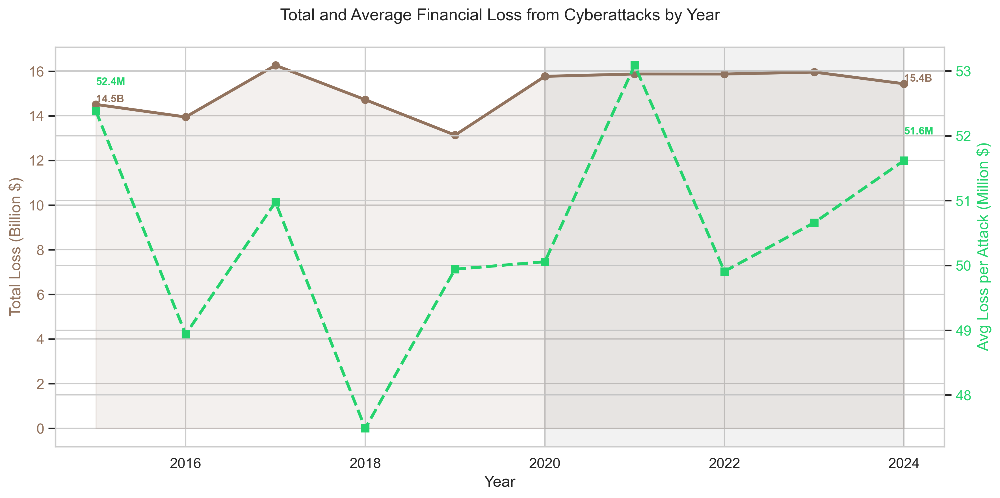Insight: Total cyberattack losses grew from $14.51B in 2015 to $15.43B in 2024, an increase of 6.4%. However, growth was inconsistent with fluctuations: -9.6% in 2018, +18% in 2020, -5% in 2022.
Action: Target consistency in containment rather than reacting to loss spikes. Use trend volatility as a metric for operational maturity.
2.2 Industry Impact
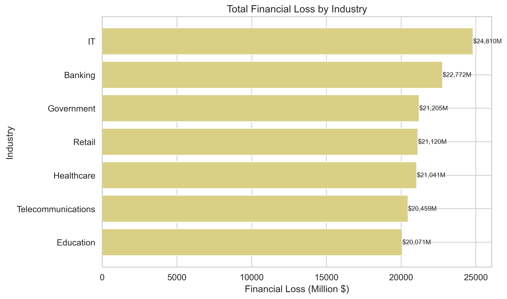Insight: Despite similar attack volumes across sectors, IT and banking incurred significantly higher financial losses — over 15% above the next group of industries. The narrow spread between most industries suggests that no sector is immune.
Action: Reframe security prioritization: move from industry stereotypes to evidence-based loss data. Allocate protection budgets proportionally to observed financial exposure.
2.1a Financial Loss by Year and Attack Type
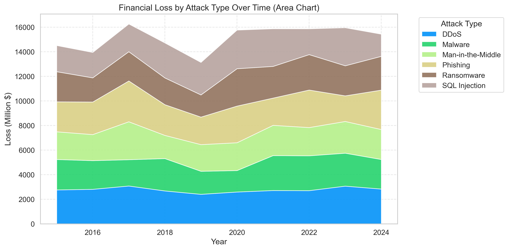Insight: Financial loss composition by attack type shows how different vectors contribute to total damage over time. Some attack types show increasing financial impact while maintaining stable incident counts.
Action: Monitor financial impact trends separately from incident frequency. Allocate loss prevention resources based on financial damage patterns, not just attack volume.
2.2 Attack Count vs Financial Impact
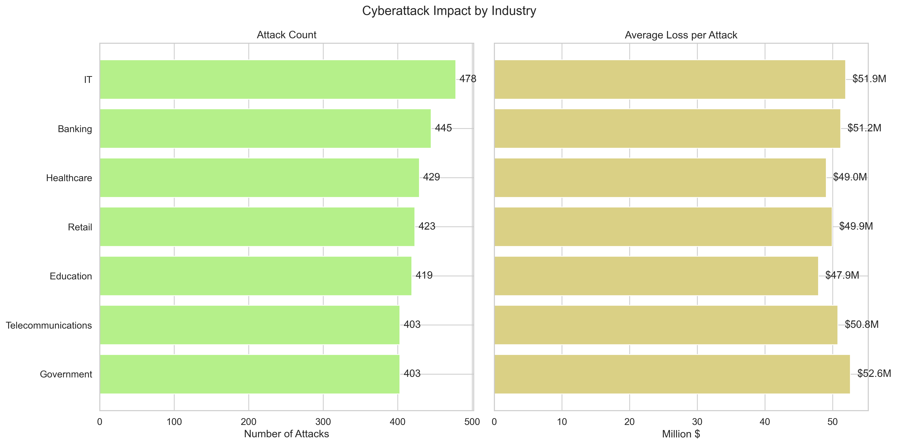Insight: Industries with high attack counts don't always show proportionally high financial losses. Some sectors experience fewer but more damaging incidents, while others face high-volume, lower-impact attacks.
Action: Develop industry-specific incident response strategies. High-volume sectors need efficient triage, while high-impact sectors require intensive damage containment capabilities.
2.3 Loss Distribution Analysis
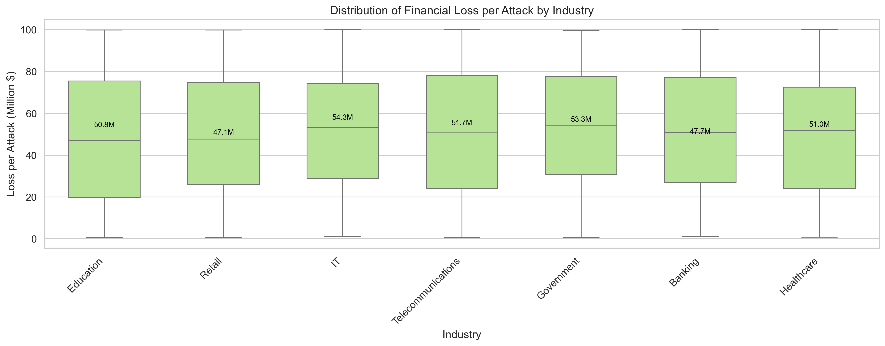Insight: Financial loss distributions vary significantly across industries, with some showing high variability (many small incidents, few large ones) while others show more consistent loss patterns.
Action: Customize financial risk management approaches based on industry loss distribution patterns. High-variability sectors need catastrophic loss insurance.
2.4 Loss Distribution by Attack Type
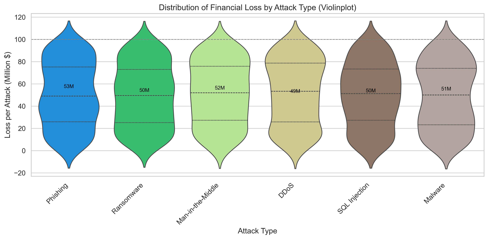Insight: Attack types show distinct financial loss distribution patterns. Some consistently cause moderate damage, while others have high variability with potential for extreme losses.
Action: Implement attack-type-specific financial risk controls. Focus catastrophic loss prevention on high-variability attack types.
2.5 User Impact vs Financial Loss
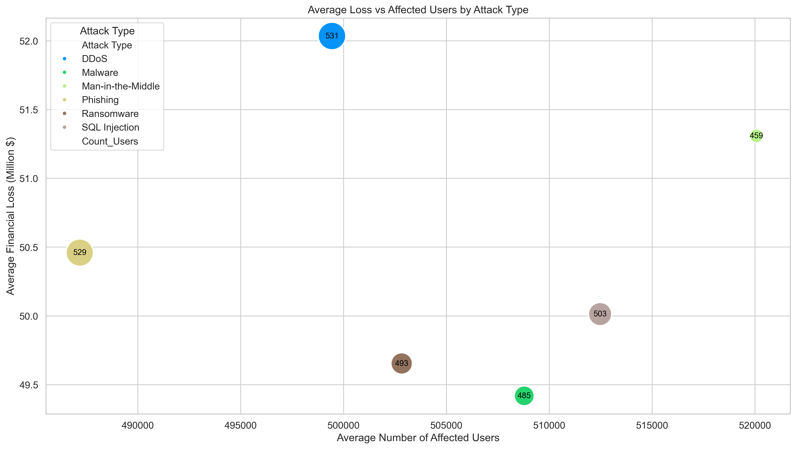Insight: The relationship between affected users and financial loss varies by attack type. Some attacks cause high financial damage with relatively few affected users, while others impact many users with lower per-user costs.
Action: Balance user protection and financial protection strategies based on attack type characteristics. Some threats require user-focused defenses, others need financial controls.
2.6 Average Loss by Attack Type
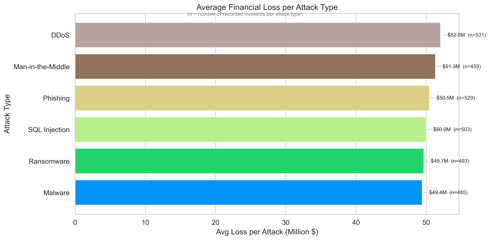Insight: Although phishing is often viewed as low-level noise, it now causes average losses on par with DDoS and man-in-the-middle attacks, all concentrated between $50.5M and $52.0M per incident.
Action: Avoid ranking threats based on perceived complexity. Ensure uniform containment protocols across all entry types.
Part 3: Attack Sources & Industry Impact
3.1 Attack Source Distribution
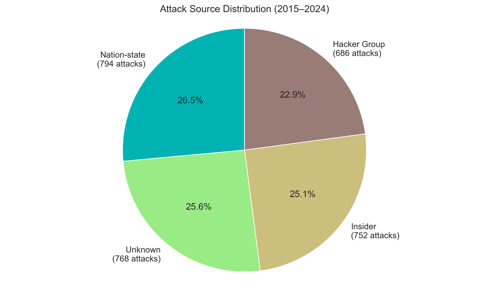Insight: Attack sources are evenly split, each ranging from 23% to 30% over 10 years. No source clearly leads, indicating weak attribution and a need to treat all threat origins as equally likely.
Action: Build source-neutral defenses. Focus on broad threat coverage instead of targeting specific actors.
3.2 Attack Source Trends Over Time
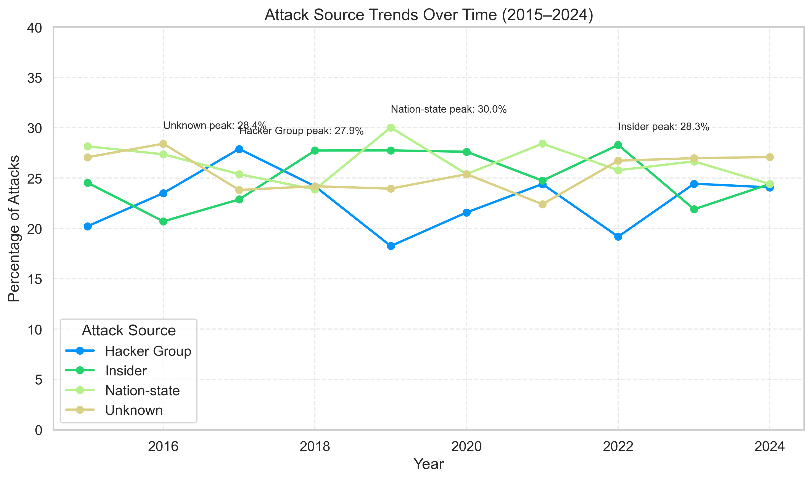Insight: Attack source composition shows cyclical patterns with nation-state activity peaking in certain years. Hacker group activity remains consistently high, while insider threats show seasonal variations.
Action: Develop dynamic threat intelligence that adapts to cyclical nation-state campaigns. Maintain consistent defenses against hacker groups year-round.
3.3 Top Targeted Industries
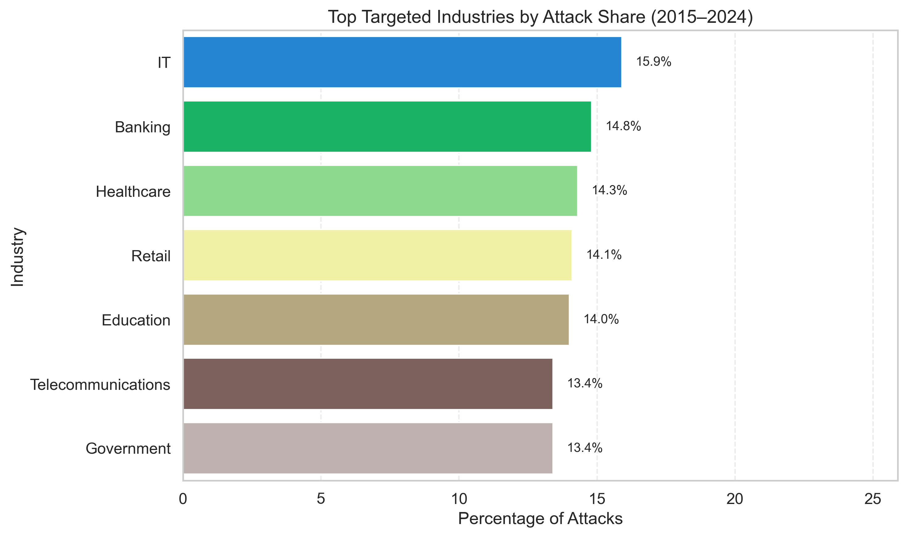Insight: IT sector leads with the highest attack share, followed by Banking and Healthcare. These three industries account for a disproportionate share of cyberattacks due to their high-value data and digital infrastructure.
Action: IT, Banking, and Healthcare sectors should receive priority in national cybersecurity frameworks. Implement sector-specific threat sharing programs.
3.4 Industry-Specific Attack Sources
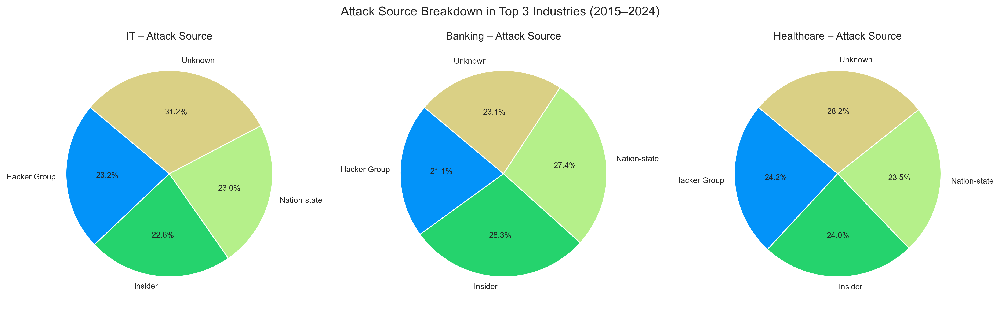Insight: Different industries face distinct threat actor profiles. Banking sees more nation-state activity, IT faces diverse threats, while Healthcare has higher insider threat rates.
Action: Customize threat detection and response strategies based on industry-specific threat actor patterns. Healthcare should focus on insider threat programs.
3.5 Attack Source Distribution by Industry
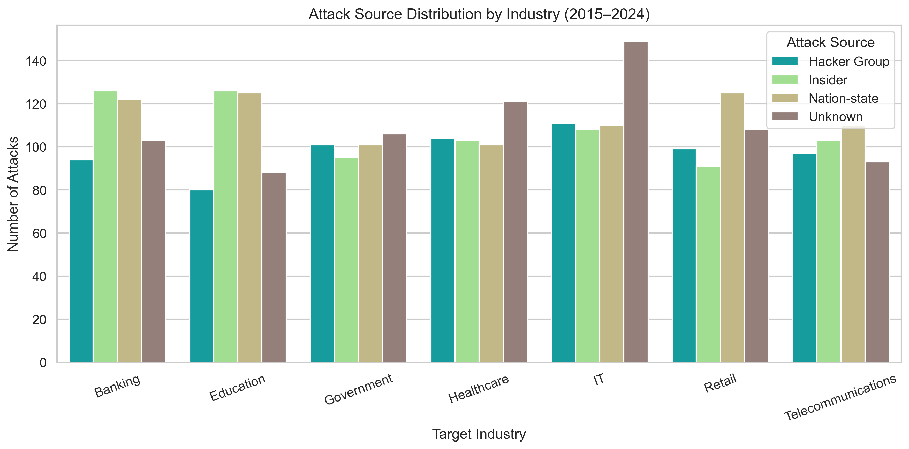Insight: Attack source distribution varies significantly across industries. Some sectors are primarily targeted by external threats, while others face balanced threat landscapes including insider risks.
Action: Industry-specific defense strategies should reflect the unique threat actor mix each sector faces. Balance external and internal security controls accordingly.
Part 4: Vulnerabilities & Defense Mechanisms
4.1 Vulnerability Distribution & Growth
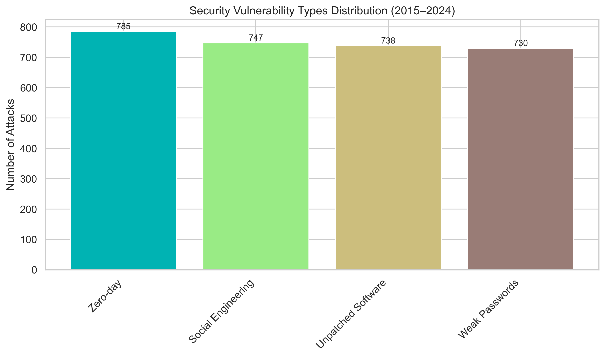 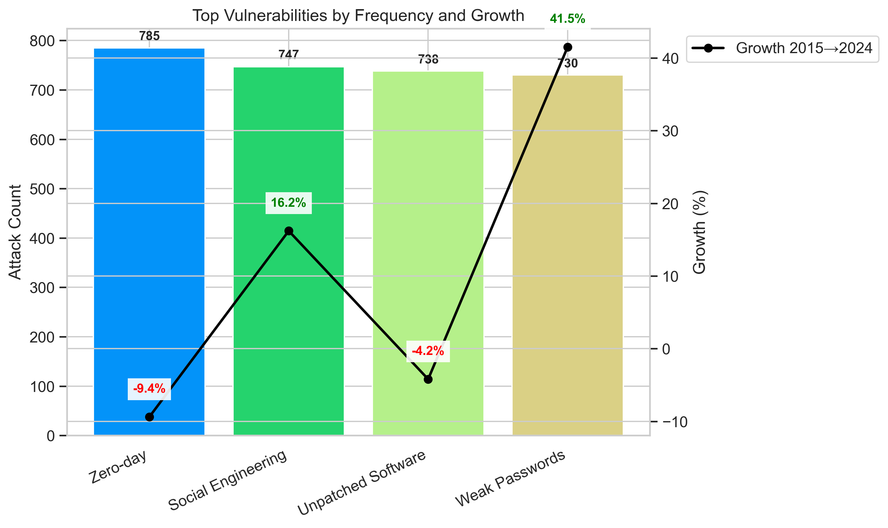Insight: Zero-day exploits lead in volume (785 incidents, 26.2%) but show negative growth. Weak Passwords grew significantly, while Social Engineering and Unpatched Software show moderate growth patterns.
Action: Maintain strong zero-day defenses due to high volume. Prioritize password security improvements and MFA deployment to counter growing weak password exploitation.
4.2 Current Year Vulnerability Landscape
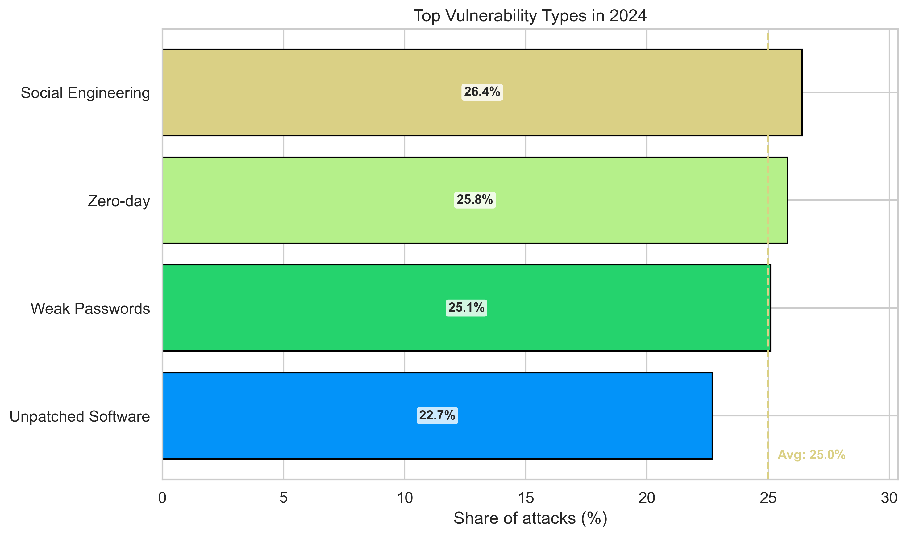Insight: The 2024 vulnerability landscape shows continued dominance of traditional attack vectors, with some vulnerabilities showing above-average attack rates compared to historical patterns.
Action: Focus on vulnerabilities showing above-average activity rates. Adjust security priorities based on current year trends rather than historical averages.
4.3 Attack Frequency vs Resolution Time
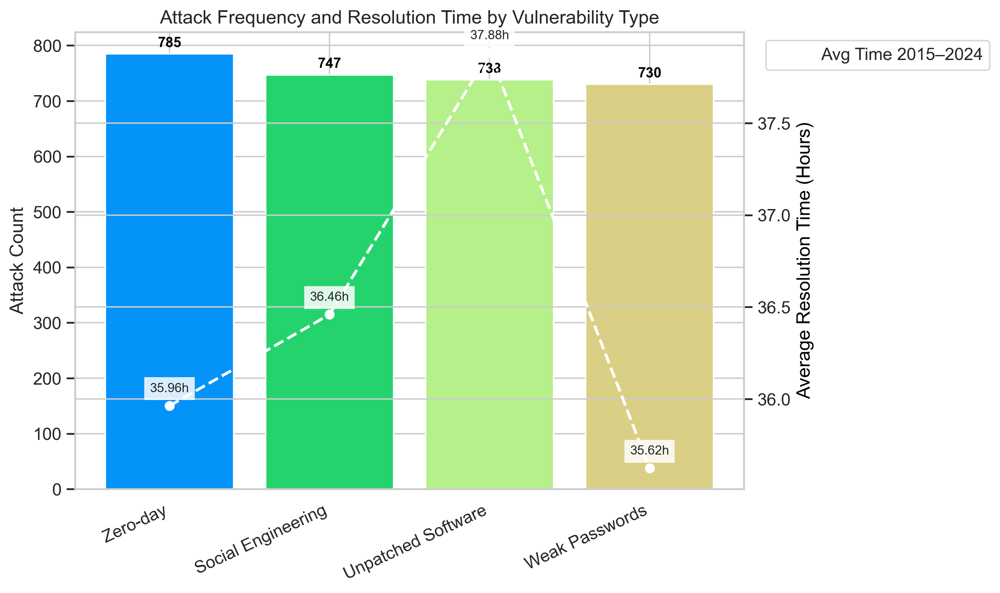Insight: High-frequency vulnerabilities don't always correlate with faster resolution times. Some common attack vectors still require extended resolution periods, indicating process inefficiencies.
Action: Optimize incident response procedures for high-frequency vulnerabilities. Implement automated response capabilities for the most common attack types.
4.4 Vulnerability Usage by Attack Type
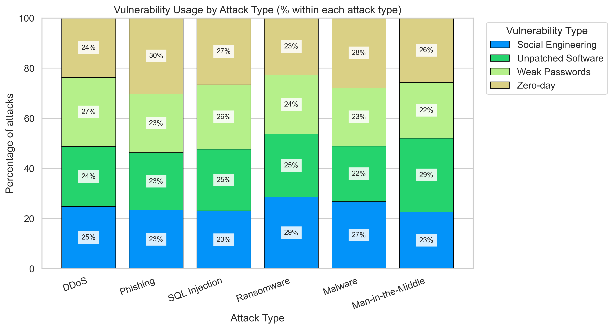Insight: Different attack types exploit different vulnerability patterns. Some attack vectors show strong preferences for specific vulnerability types, while others are more opportunistic.
Action: Tailor vulnerability management programs based on the attack types most relevant to your threat model. Prioritize patching based on attack-vulnerability correlations.
4.5 Attack Sources and Vulnerabilities
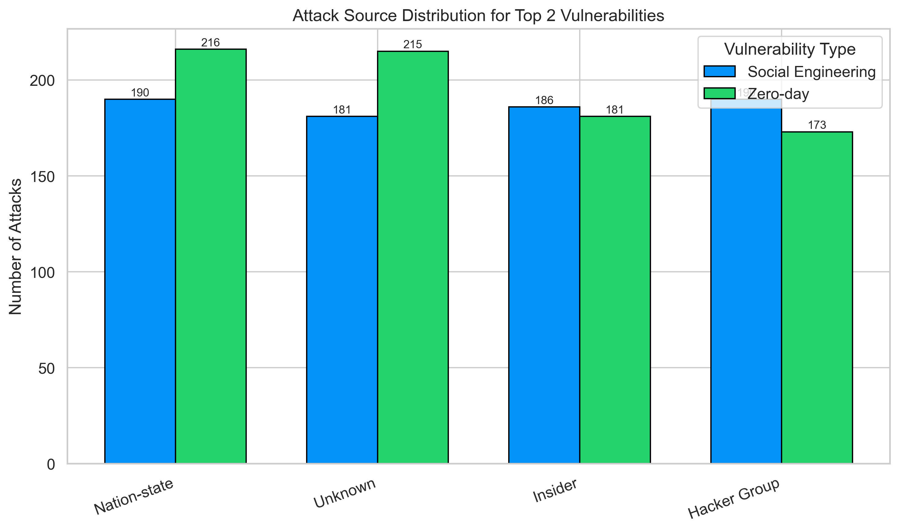Insight: Different attack sources show preferences for specific vulnerability types. Nation-state actors and hacker groups exploit different vulnerability classes, indicating varying capabilities and objectives.
Action: Align vulnerability management with threat intelligence about likely attack sources. Focus on vulnerabilities preferred by the most relevant threat actors for your organization.
4.6 User Impact Trends
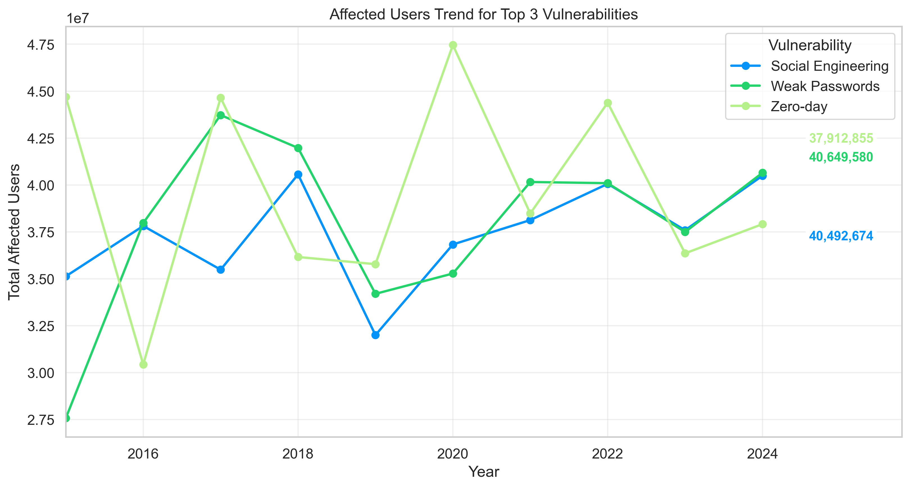Insight: User impact from different vulnerability types shows varying trends over time. Some vulnerabilities affect increasingly larger user populations, while others remain more targeted.
Action: Prioritize vulnerabilities showing increasing user impact trends. Implement user-centric risk assessment in vulnerability management processes.
4.7 Defense Effectiveness Analysis
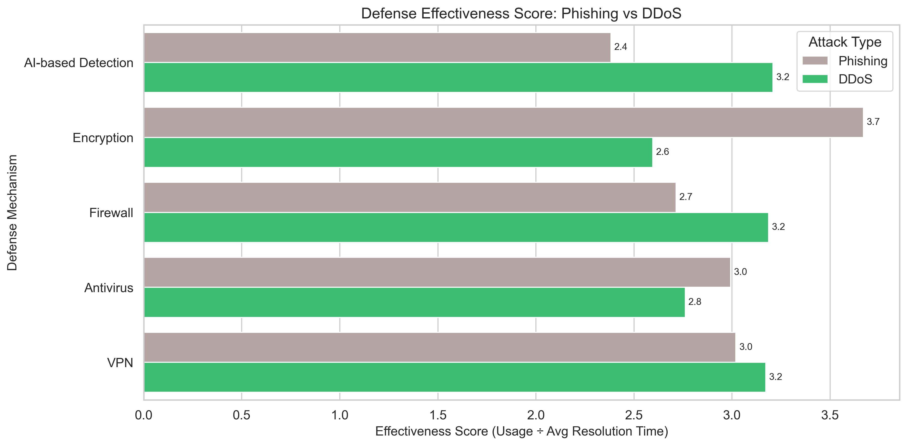Insight: Defense mechanism effectiveness varies significantly by attack type. Some defenses show strong performance against specific attacks but may be less effective against others.
Action: Implement layered defense strategies rather than relying on single mechanisms. Match defense tools to the specific attack types they handle most effectively.
Part 5: Geographic Patterns
5.1 Country Analysis
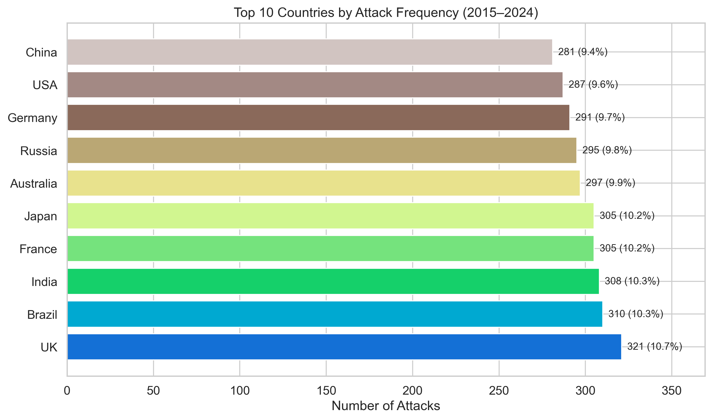Insight: UK leads with 10.7% of attacks, followed by Brazil (10.3%) and India (10.3%). The USA ranks 9th with 9.6%. The top 3 countries account for over 30% of global attacks, showing a more distributed geographic pattern than expected.
Action: Focus intelligence and monitoring resources on UK, Brazil, and India as primary threat origins. Develop region-specific threat intelligence partnerships.
5.2 Geographic Trends
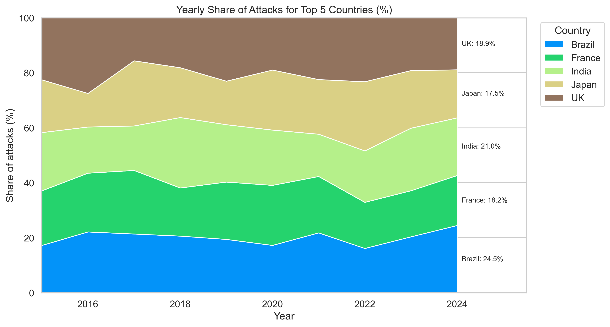Insight: Country attack shares remain relatively stable over time, with gradual shifts rather than dramatic changes. This indicates persistent threat actor infrastructure and capabilities by geography.
Action: Plan long-term geographic threat monitoring strategies based on stable country patterns rather than reactive approaches.
5.3 Attack Type Patterns by Country
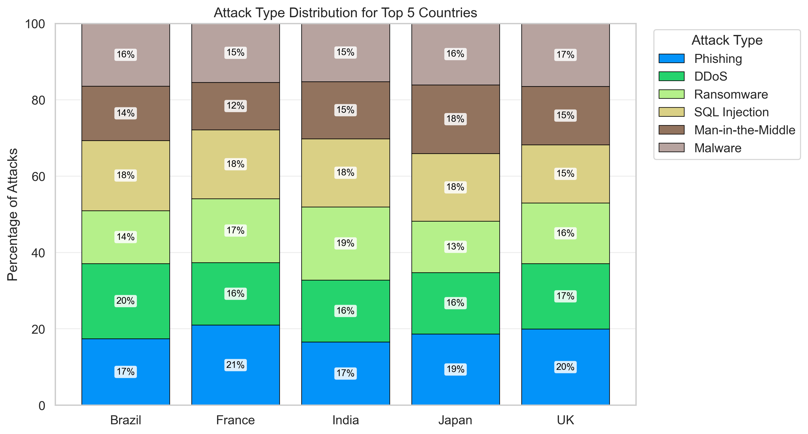Insight: Different countries show distinct attack type preferences. Some nations focus heavily on specific attack vectors (>40% concentration), while others maintain balanced attack portfolios across all types.
Action: Customize defense strategies by geographic threat patterns. Deploy specialized countermeasures for countries with dominant attack methods.
5.4 Attack Source Geography
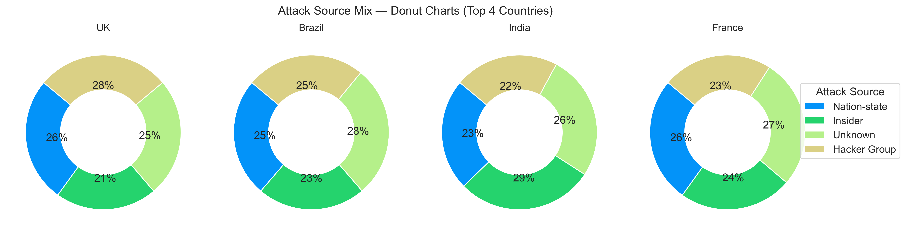Insight: Attack source composition varies significantly by country. Some regions show higher nation-state activity, others are dominated by hacker groups or have high unknown attribution rates.
Action: Tailor attribution and response efforts based on country-specific threat actor ecosystems. Invest more in attribution capabilities for regions with high "unknown" rates.
5.5 Geographic Attack Trends
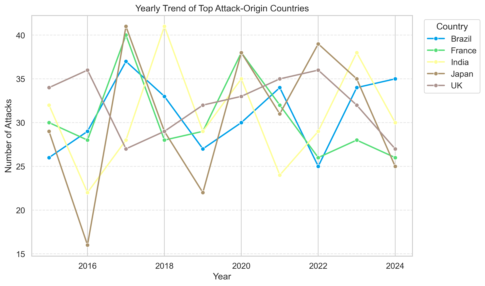Insight: Top attack-origin countries show varying temporal patterns. Some maintain consistent attack volumes, while others show cyclical or emerging threat patterns over the 10-year period.
Action: Develop country-specific threat forecasting models based on historical patterns. Allocate monitoring resources dynamically based on predicted country threat cycles.
Key Conclusions
Overall Findings
- Cyber risk is no longer limited to certain industries or attack types
- Phishing grew the fastest (30%+) and financial losses became almost equal across all sectors
- What matters most is the vulnerability being exploited, not where or how the attack happens
- Weak passwords, zero-day exploits, social engineering, and unpatched software are the main entry points
Strategic Recommendations
- Strengthen password security with MFA, regular rotation, and strict complexity rules
- Implement continuous patch management to close unpatched software gaps quickly
- Maintain 24/7 monitoring and rapid response for zero-day exploits
- Deploy advanced phishing protection, including AI-based email filtering and user training
- Build DDoS mitigation capacity that can scale during peak attack periods
- Use unified incident response processes that work for all attack types and sources
- Track vulnerability trends and adjust security priorities at least quarterly
- Share threat intelligence across industries to detect and block cross-sector campaigns early
Final Insight: Cyber risk today is global, repeating in cycles, and equally dangerous for everyone. To reduce future losses, especially before the expected 2027 surge, organizations must focus on fixing core weaknesses, reacting faster, and keeping defenses ready for all major threats.